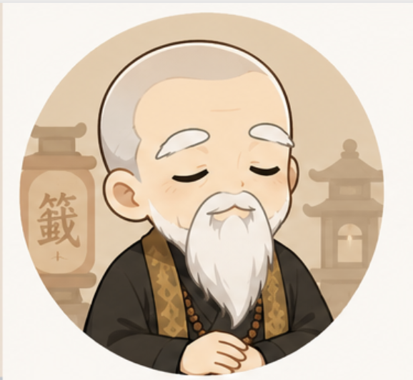

心中默念 · 無需輸入
請閉上雙眼，於心中默念：弟子（姓名）某某某，農曆（生辰）某年某月某日生，今日於霞海城隍廟前誠心請示。
神明聽見心聲，勿須於此處輸入個人資料。
千年古老智慧，一籤指引人生。透過網頁虔心求籤問神，聆聽天意，安頓此心。
向神明稟告來意，心存敬意，靜定一念。
於心中默念姓名、生辰與所求，神明已知。
虔心搖動籤筒，待一籤自然躍出，即為主籤。
以筊杯請示神明，聖筊即應允，否則重新求取。
向城隍爺與月下老人稟告來意，心存敬意。
於心中默念姓名、生辰與所求，神明已知。
虔心搖動籤筒，待一籤自然躍出，即為主籤。
以筊杯請示神明，聖筊即應允，否則重新求取。
霞海城隍廟位於台北大稻埕迪化街，創建於清咸豐六年（1856），主祀城隍爺。廟內所奉之月下老人尤為靈驗，為台北求姻緣之首選廟宇。
信眾若心有所困，可於神前誠心默念所問之事，搖籤問神並以擲筊請示。神明將透過籤詩為您指引方向。
請閉上雙眼，於心中默念：弟子（姓名）某某某，農曆（生辰）某年某月某日生，今日於霞海城隍廟前誠心請示。
神明聽見心聲，勿須於此處輸入個人資料。
—
INTERPRETATION · BY TEMPLE ORACLE
—

—
—